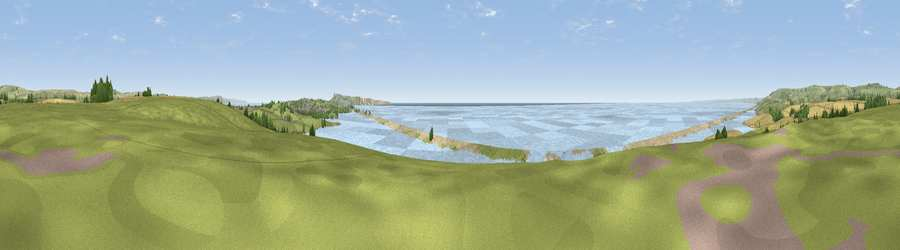

Viewpoint near Fleet
#4437 in England · top 17% of its area beats it · near FleetThe view, rendered

A 360° render of this exact spot computed from the terrain model, tree cover and land cover — summer colours, afternoon light, calibrated against photographs of famous viewpoints. Real trees, hedges and buildings will differ in detail.
The panorama
Grey silhouette: terrain skyline in each direction (720 bearings, Earth curvature and refraction included). Dashed green: skyline with trees (+15 m) and buildings (+8 m) as obstacles. Blue strip: how far the ground is visible on each bearing.
Where the view opens
Wedge length = distance to the farthest visible ground on that bearing (vegetation-aware). Rings at 10, 25 and 50 km.
What fills the view
55% water · 26% grassland · 9% cropland · 7% bare ground · 3% woodland ·
Angular shares of the visible panorama (visual magnitude), not map area. Landscape diversity 0.53 (0–1 Shannon).
Key numbers
More beautiful places nearby
The staircase of upgrades: each row has a higher view potential than everything closer. Driving times are estimates from straight-line distance, calibrated against real road routing — check an actual route before setting out.
| Place | Direction | Drive | Score |
|---|---|---|---|
| Viewpoint near Abbotsbury | NW · 5 km | ~11 min | 73.2 |
| Viewpoint near Martinstown | N · 6 km | ~13 min | 76.2 |
| Viewpoint near Abbotsbury | NW · 7 km | ~14 min | 80.9 |
| Viewpoint near Portesham | N · 7 km | ~15 min | 82.7 |
| Viewpoint near Abbotsbury | NW · 8 km | ~16 min | 83.8 |
| Viewpoint near Abbotsbury | NW · 8 km | ~17 min | 85.1 |
| Viewpoint near Abbotsbury | NW · 9 km | ~17 min | 89.0 |
| Viewpoint near West Bexington | NW · 10 km | ~19 min | 89.5 |
50.62276, -2.53272 · source: screening · position refined by local search. Computed location — check access rights before visiting.